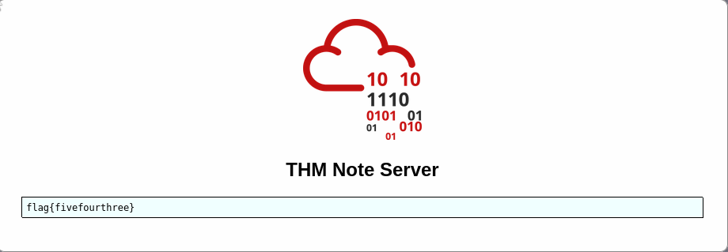
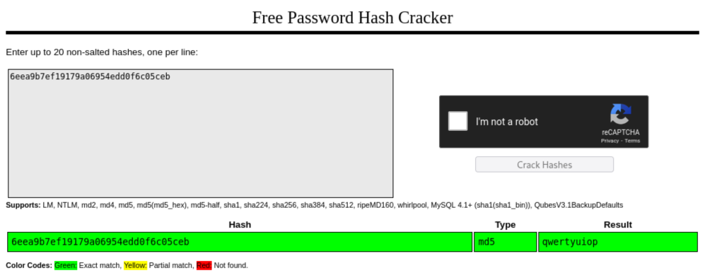
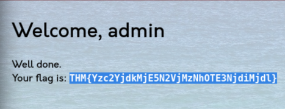
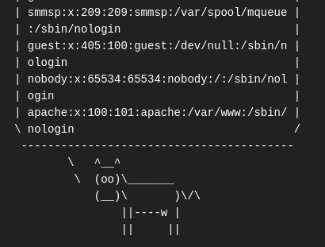
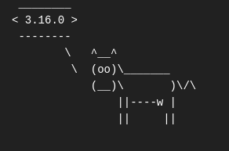

What is OWASP?
The Open Web Application Security Project, or OWASP, is an international non-profit organization dedicated to web application security. One of OWASP’s core principles is that all of their materials be freely available and easily accessible on their website, making it possible for anyone to improve their own web application security.
What is OWASP Top 10?
The OWASP Top 10 is a regularly-updated report outlining security concerns for web application security, focusing on the 10 most critical risks.
- Broken Access Control
- Cryptographic Failures
- Injection
- Insecure Design
- Security Misconfiguration
- Vulnerable and Outdated Components
- Identification and Authentication Failures
- Software and Data Integrity Failures
- Security Logging & Monitoring Failures
- Server-Side Request Forgery (SSRF)
1. Broken Access Control
Websites usually have pages that are protected from regular visitors. For example, only the site’s admin user should be able to access a page to manage other users. If a website visitor can access protected pages they are not meant to see, then the access controls are broken.
Broken Access Control (IDOR Challenge)
IDOR or Insecure Direct Object Reference refers to an access control vulnerability where you can access resources you wouldn’t normally be able to see. This occurs when the programmer exposes a Direct Object Reference, which is just an identifier that refers to specific objects within the server. By object, it can refer to a file, a user, a bank account in a banking application, or anything.
Deploy the machine and go to http://MACHINE_IP - login with the username noot and the password test1234.
Look at other user's notes. What is the flag?
flag{fivefourthree}
http://10.10.255.211/note.php?note_id=0 changed the id in the url from 1 to 0 and revealed the flag.
2. Cryptographic Failures
A cryptographic failure refers to any vulnerability arising from the misuse of cryptographic alogrithms for protecting sensitive information. Web applications require cryptography to provide confidentiality for their users at many levels.
Cryptographic Failures (Challenge)
Have a look around the web app. The developer has left themselves a note indicating that there is sensitive data in a specific directory.
What is the name of the mentioned directory?
/assets
Navigate to the directory you found in question one. What file stands out as being likely to contain sensitive data?
webapp.db
Use the supporting material to access the sensitive data. What is the password hash of the admin user?
6eea9b7ef19179a06954edd0f6c05ceb 1┌──(kali㉿kali)-[~/Downloads]
2└─$ ls
3webapp.db
4
5┌──(kali㉿kali)-[~/Downloads]
6└─$ file webapp.db
7webapp.db: SQLite 3.x database, last written using SQLite version 3022000, file counter 255, database pages 7, 1st free page 5, free pages 1, cookie 0x6, schema 4, UTF-8, version-valid-for 255
8
9┌──(kali㉿kali)-[~/Downloads]
10└─$ sqlite3 webapp.db
11SQLite version 3.44.2 2023-11-24 11:41:44
12Enter ".help" for usage hints.
13sqlite> .tables
14sessions users
15sqlite> PRAGMA table_info(users);
160|userID|TEXT|1||1
171|username|TEXT|1||0
182|password|TEXT|1||0
193|admin|INT|1||0
20sqlite> SELECT * FROM users;
214413096d9c933359b898b6202288a650|admin|6eea9b7ef19179a06954edd0f6c05ceb|1
2223023b67a32488588db1e28579ced7ec|Bob|ad0234829205b9033196ba818f7a872b|1
234e8423b514eef575394ff78caed3254d|Alice|268b38ca7b84f44fa0a6cdc86e6301e0|0Crack the hash. What is the admin’s plaintext password?
qwertyuiop
Login as the admin. What is the flag?
THM{Yzc2YjdkMjE5N2VjMzNhOTE3NjdiMjdl}
3. Injection
Injection flaws occur because the application interprets user-controlled input as commands or parameters.
Some common examples:
- SQL Injection
- Command Injection
The main defence for preventing injection attacks is ensuring that user-controlled input is not interpreted as queries or commands.
- Allow list: checks input by comparing it to a list of safe inputs. If the input is marked as safe, then it is processed. Otherwise, it’s rejected.
- Stripping input: If the input contains dangerous characters, these are removed before processing.
Command Injection
Command Injection occurs when server-side code in a web app makes a call to a function that interacts with the server’s console directly. An Injection web vulnerability allows an attacker to take advantage of that call to execute operating system commands arbitrarily on the server.
What strange text file is in the website’s root directory?
drpepper.txt
How many non-root/non-service/non-daemon users are there?
0In order to find users in Linux, we can use the following command: cat /etc/passwd.

However, there are so many users in the output. We are only interested in non-root/non-service/non-daemon users.
We need to remember that Linux-based systems have two types of users: system and normal users.
system usersare entities created by the system to run non-interactive processes, the processes that run in the background and do not require human interaction.normal usersare human users created by root or another user with root privileges.
Both system and normal users in Linux have a Unique User ID (UID) to identify them.
- System users have UIDs in the range from
0 (root user) to 999. - Normal users typically receive UIDs from
1000 onwards
I researched further to understand /etc/passwd file fields.

arrow #3 represents the UID. From the output of our commands cat /etc/passwd, I found only one user that has UID higher than 1000.
That is, nobody. However, I learned that the user ’nobody’ is a reserved user created by the system. Therefore, the answer to the question is actually 0.

What user is this app running as?
apacheIn order to find the current user, we can run the following command: $(whoami)

What is the user’s shell set as?
/sbin/nologin$(cat /etc/passwd) command we saw above shows that user apache’s shell at the very bottom.

What version of Alpine Linux is running?
3.16.0The hint of the question tells us that the version can be found in /etc/alpine-release.
